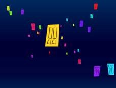
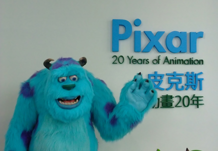
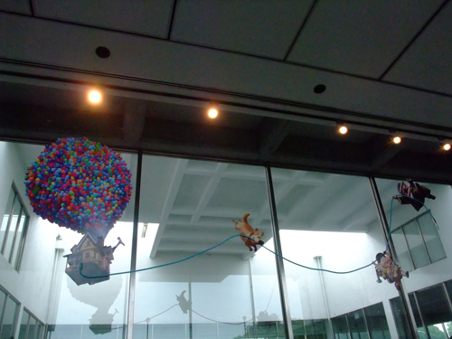

繼上次去台北設計論壇後，就很期待還會有這樣的活動。這次皮克斯動畫展。剛好又有這機會可以系出遊。抵達當代美術館，周圍充滿了本次展覽的形象—毛怪和大眼仔的簡筆畫。展覽導覽很特別，第一次使用耳機聽解說，走太遠還會收不到音，不得不專心圍繞在導遊旁聽。
 本次參觀剛好也可以藉此機會學習展場的概念和空間設計。展覽場開門見山就是怪獸電力公司的門。裡面放映著開門的動畫。非常有身歷其境的感覺。
展場中以三大過程作為主軸，分別為
角色，故事和世界。
出現再螢光幕的一個角色，是從主題發想到建置模型並花很長的時間反覆進行，展覽裡拿出最著名的毛怪，裡面有許多毛怪模型，看看那些最原始的模型，從粗糙像大眼仔的毛怪，到最後大家喜愛的毛怪。總共經過35次修改，每次漸漸的抓到他們想要的感覺。從畫草稿到塑模，角色的動作造型等即為藝術和科技技術間蹦出的火花。
接著進入的空間是故事，也就是我們常說的腳本，這次了解到腳本就是將ㄧ小段、ㄧ小段的故事情節把它畫出來，對於皮克斯動畫來說一個好的腳本，須讓
藝術家有認同感，能讓他們感動。
在世界也就是動畫裡面的環境，皮克斯動畫的解釋是想像那空間會有什麼，把它畫出來，並且身在其中。所謂身在其中就是他們在辦公的牆壁上都畫上了該動畫的場景。去感受那場景。其最吸引我的事黑白稿的鯊魚，用黑白來表現恐懼，
這是皮克斯最大的挑戰之ㄧ。
 展場裡還有放置皮克斯所做過的短篇動畫，原來很多都在課堂上看過了，從這些動畫中真的可以看出他們的努力。從小雪人到棋局，其中經過十年，看到棋局的動畫時都不面讚嘆。好酷炫阿!做得非常的精緻。
很欣賞最後ㄧ部腳本剪輯影片，把腳本中的人物、物體物件化變成紙片
並用鏡頭深入ㄧ個一個框框中，把皮克斯做過的動畫串聯起來，變成ㄧ部短片。
角色故事和世界都帶到了，並且從中可以了解他們進步的歷史。覺得這部是統整個展覽最具代表的作品。
非常感謝系辦的每位工作人員讓我們系可以出團校外參觀。

圖為最新上映之天外奇蹟 感覺這展場創意不錯 |